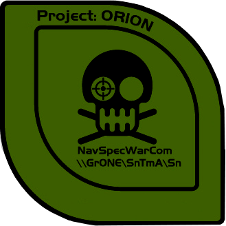
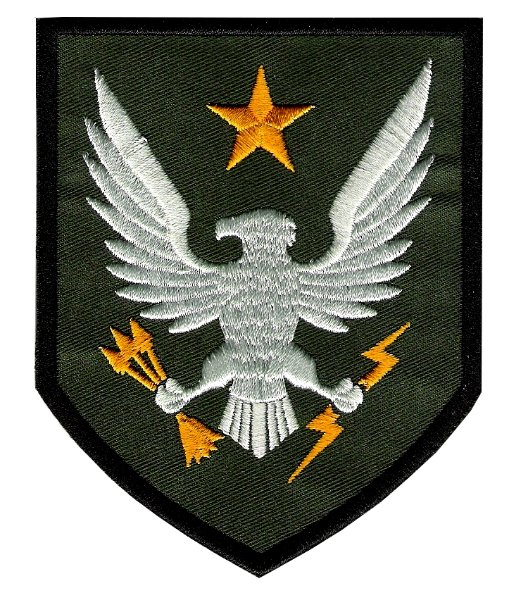
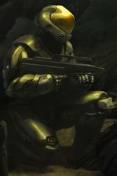

ORION Project
2321 - 2491
The first "super-soldier" program of the United Earth Government and
the United Nations Space Command. The ORION Project was an Office of Naval Intelligence
and Colonial Military Authority super-soldier program aimed at security
and counter-insurgency operations. It was originally launched in the
23rd century, but was deemed too cost ineffective. A later relaunch
occurred during the Insurrection. Though effective, it eventually
met a similar fate to the original program. ORION Project participants
retroactively called Spartans, a phrase coined for the Spartan II
pogram Director Dr. Catherine Halsey. The ORION Project subjects were
volunteer adults serving in the Marines or special forces of other branches.
The use of consenting adults for Spartan programs would not occur again
until the SPARTAN-IV Program.

The patch for Project ORION. Notice that despite being an ONI project organized under Section III the patch denotes that operational control of ORION participants was in the hands of the Navy Special Warfare Command.
SPARTAN-II Program
2517 - Present
Originally designated as ORION Project Generation II, what became the SPARTAN Program
was a reboot by Dr. Catherine Halsey of the efforts to form a contingent
of super-soldiers for use in the increasingly unstable Outer Colonies.
Kept classified from all but the highest levels of the UNSC and ONI brass;
the program's "recruits" were children five and six years of ages who
were kidnapped, replaced with clones that rapidly deteriorated, and were
trained, underwent extensive and dangerous mechanical and biological augmentation,
and coupled their enhanced physiology with the recently developed MJOLNIR
powered combat exoskeletons. SPARTAN-II's were instrumental in during the
Human-Covenant War and those surviors still in service are considered
the superior model to all other Spartan variants. In 2547, during the Human-Covenant
War the program was made public to boost morale but the details of how
SPARTAN-II's were created remained highly secret.

A patch of the SPARTAN-II program.
SPARTAN-III Program
2531 - 2553
While SPARTAN-II's were very successful and huge force multipliers they
were also ruinously expensive. The cost of a single SPARTAN-II was equivalentt
to the cost of an entire naval battlegroup. In the desperate times of the Human-Covenant
War ONI authorized Colonel James Ackerson to begin a new program which could
create super-soldiers more cheaply and in greater numbers. SPARTAN-III's were
also the product of kidnapping, extensive training, and some biological and mechnical
enhancement but the latter were far less extensive. In addition, they were equipped
not with MJOLNIR armor (a unit of which was similar in cost to an entire cruiser)
but instead Semi-Powered Infiltration armor (SPI) which was stealthier
but offered far less protection and increased abilities to their users.
The SPARTAN-III Program was increadibly deadly with entire companies often
suffering 100% casualty rates. ONI deployed SPARTAN-III companies on suicide
missions to buy time during the war until hopefuly more SPARTAN-II's could
be produced.

A SPARTAN-III in distinctive SPI armor.
SPARTAN-IV Program
2553 - Present
Returning to a program made up of volunteer military personnel,
SPARTAN-IV program seeks to strike a moral balance and, frankly, to
make super-soldiers more affordable and more plentiful than the SPARTAN-II
program while attaining similar results. This is done by using advances in safer,
but less effective, biological and mechanical augmentation and to make up
the difference in physical abilities with more advanced, second generation,
armor. SPARTAN-IV's were integrated with and serve alongside those
SPARTAN-II's and SPARTAN-III's willing to continue serving.

A SPARTAN-IV in second generation MJOLNIR powered armor.